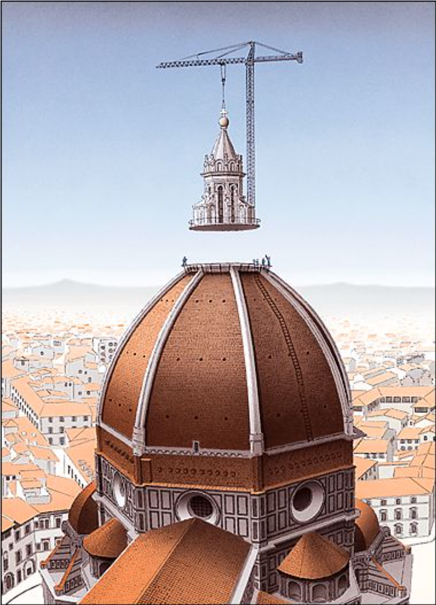

L5. 생각도구들은 어떻게 창의적 생각을 촉진시킬까?
생각의 공간 탐험과 생각도구의 힘
지난 시간 리뷰
- 우리가 창의적 인지활동을 하는데 꼭 필요한 뇌가 어떻게 진화하게 되었고 어떤 기능을 하는지 학습했다.
- 진화적 관점에서 뇌가 우리 주변 세상을 이해하고 계산하는 방식에 대해 학습하였다.
- 짧은 시간 안에 인간이 큰 뇌와 함께 발달된 인지 능력을 갖추게 된 현상을 설명하기 위한 다양한 설명들을 만나봤다.
수업 목표
- 가능성의 공간 탐색 및 등반하기
- 아이디어 탐색과 등반에 도움을 주는 생각도구들 이해
- 창업활동에 활용할 수 있는 나만의 생각도구 고안해보기.

진화의 공간 탐색하기
표상을 다룰줄 아는 뇌의 등장
- 인간은 표상을 저장하고 활용하는 고차 인지능력을 갖춤.
- 이러한 인지 능력은 행동적 유연성의 범위를 폭발적으로 넓혔다고 할 수 있다.
- 표상과 그로 인한 행동의 가능성의 공간 폭발과 폭발의 연쇄가 일어날 준비가 됨.
진화의 공간
화덕만두 메뉴 구별법
메뉴판

화덕 속 만두

진화의 공간
네 가지 메뉴를 사장님 또는 손님이 구분할 수 있는 방법은?
메뉴 구별하기🥟
정답
- 흰깨(0)와 검은깨(1)만 있으면 됨
- 11, 10, 01, 00
\[ {참깨의\:종류}^2 = 메뉴의\:종류 \] \[ 2^2 = 4 \]
- 사장님의 방법일 뿐 유일한 방법은 아님
정답

유한한 요소들로 무한에 가까운 공간을 생성하는 법
- 조합(combination)
- 복잡하고 다양한 feature 들을 만들어 내는 방법
- 화덕만두 메뉴 공간보다 훨씬 넓은 공간으로…
바벨의 도서관
책의 구조 📚
- 각 권은 410페이지
- 각 페이지는 40줄
- 각 줄은 80여개 글자 -> 각 권의 문자 자리 수 : 1312000개
- 사용할 문자는 25개
모든 책의 조합의 수 : \(25^{1312000} \gg 100^{500000}\)
이게 얼마나 큰 수냐면,
우주의 관찰 가능한 영역의 입자 수: \(100^{40}\)
진열실의 개수 ⬡
1개 진열실에 20개 책장(4개 벽 X 5개 책장)
책장마다 32권의 책 -> 1개 진열실에 640권의 책
세상의 모든 가능한 책을 담기 위해서는 \(25^{1312000} \div 640\) 개의 진열실이 필요
이론상 필요한 진열실의 개수는 무한이 아니다.
진열실의 개수 ⬡
“창고는 수만 개의-또는 수억 개, 수조 개의-육각형 통풍구가 벌집 구조를 이루고 있는데, 통풍구 가장자리의 발코니에는 책장이 늘어서 있다. … 이 창고는 무한할까? 결국 그들은 무한하지 않다고 결론 내리지만, 무한하다고 봐도 무방하다” - 대니얼 데닛, “직관펌프 생각을 열다”, 2015. pp. 258-259
바벨의 도서관(1944, 호르헤 루이스 보르헤스)


Vanishingly small, Vastly
- Vanishingly small : 없다고 할 정도로 작은, 없작은
- Vastly(Very-much-more-than-astronomically) : 천문학적인 수보다 훨씬 많은, 천많은
Vanishingly small, Vastly

사막에서 바늘을 찾아봅시다!🌵
🎯 target 문장 ↓↓↓↓
on fifteenth march, twenty twenty five, the second unicorn startup was born at gachon cocone school.
The Library of Babel
사막에서 바늘 찾기
page 91 Volume 14 on Shelf 3 of Wall 4 of Hexagon: 1qkpe4ww…
좋은 아이디어란?
“행복한 가정은 모두 모습이 비슷하고, 불행한 가정은 모두 제각각으로 불행을 안고 있다.”
톨스토이 “안나 카레리나”의 첫 문장
아이디어의 공간에서 파도타기


좋은 아이디어를 찾는 방법
- 가장 확실한 방법은 모든 공간에 ’방문’하는 것
- 그러나
바벨의 도서관을 떠올려 보자. - 인생은 짧다🏃🏻♂️
언덕 오르기(Hill climbing)
- 시간이 한정되어 있으니 좋은 방법이 필요함.
- 현재 어느 위치에 있든 높은 쪽으로 이동하다보면 가장 높은 곳에 도달하지 않을까?

경사하강법

언덕 오르기(Hill climbing)

Exploitation vs. Exploration

참고자료 출처 : Link
Exploitation vs. Exploration
- exploitation : 현재의 정보로 최선을 hill climbing 등 최선을 다해 최적값을 찾는 활동
- exploration : 정보를 모으기 위해서 실험적인 행동을 하는 것

Exploitation vs. Exploration
- exploitation : 현재의 정보로 최선을 hill climbing 등 최선을 다해 최적값을 찾는 활동
- exploration : 정보를 모으기 위해서 실험적인 행동을 하는 것
아무리 실행력이 뛰어나도 잘못된 전제에 기초한 제품을 심폐 소생할 수는 없다. 사실 잘못된 전제에 더 많은 시간과 노력을 투자할수록 더 오래, 더 크게, 더 고통스럽게 실패한다.
알베르트 사보이아 “아이디어 불패의 법칙” 중에서…
Exploitation vs. Exploration
- exploitation : 현재의 정보로 최선을 hill climbing 등 최선을 다해 최적값을 찾는 활동
- exploration : 정보를 모으기 위해서 실험적인 행동을 하는 것
아무리 실행력(exploitation)이 뛰어나도 잘못된 전제(시작점을 잘못 잡거나 잘못된 exploration을 하면)에 기초한 제품을 심폐 소생할 수는 없다. 사실 잘못된 전제에 더 많은 시간과 노력을 투자할수록 더 오래, 더 크게, 더 고통스럽게 실패한다.
알베르트 사보이아 “아이디어 불패의 법칙” 중에서…
Exploitation vs. Exploration
- 자연선택에 의한 생물의 진화과정이
변이와적응을 적절히활용하는 것과 유사 - 자연계와 마찬가지로 두 활동 모두 전역 최적점에 곧바로 도달할 수는 없기 때문에 더듬더듬 갈 수 밖에 없다.
- 아이디어 검증 단계에 적용하면 exploration은 새로운 가설을 세우는 것이고 exploitation은 프리토타이핑이라고 할 수 있다.
- 두 프로세스의 적절한 균형을 찾는 것이 좋다.
Local solution & Local question
- 이러한 단계에서 흔히 저지르게 되는 실수!
- local한 solution : 👌
- local한 question : 🙅
개인적인 경험과 painpoint, 양날의 칼
- 개인적인 경험에서 문제를 발굴하는 것이 문제 해결에 강한 동기를 주는 것은 맞지만 이러한 문제가 local question일 경우가 많다. 개인적 경험이라도 이것이 global question 인지를 꼭 확인해봐야 한다. (시장성 조사)
- 대학생이 프로젝트를 기획하거나 창업을 할 때 가장 편한 영역이 학교와 관련된 것일 가능성이 크다. 그만큼 경계를 해야함.
Quiz
- 시장 조사는 exploitation 인가 exploration 인가?
- 사용자 조사는 exploitation 인가 exploration 인가?
Wrap up!
- 공간 속 다양한 형태의 아이디어를 모두 확인할 시간이 없다.
- 최적을 찾는 방법을 효과적으로 실행해야함(exploitation, hill climbing 등)
- exploitation만으로는 답을 못찾을 수 있다.
- 시작점(initial value) 설정을 global 하게
- 적절한 시점에 exploration 시도
지성적 설계와 다윈주의
exploration과exploitation은 그 자체로 자연선택의 원리의 핵심적인 부분은 잘 담고 있음.- 좋은 아이디어를 찾는
exploration과exploitation에는 인간의 의지와 이해력이 개입되어 있는 듯이 보임. - 인간의 의지가 많이 개입되었다고 해도 자연선택의 원리에 위배되는 것은 아니다.(애완견 육종 사례를 비롯한 인위선택 사례)
- 좋은 아이디어를 찾는 것은 애완견 육종과는 다르게 보다 복잡한 원리를 품고 있고 머릿속에서 일어난다.
- 보다 전문적으로 설명하자면 다윈주의에 대해서도 다윈주의적 관점을 적용에서 보면 다양한 방식의 설계가 가능하다.
다윈공간
탐험과 개척을 위한 도구들
- 아이디어의 공간에서 효과적으로 exploitation과 exploration 하고 성공적으로 아이디어를 발전시키기 위한 도구들에는 무엇이 있을까?

직관펌프와 생각도구
강건너기 문제
네 명의 사람과 배 한 척이 강 한편에 있고 모든 사람을 강의 건너편으로 옮겨야 하는 상황. 배에는 딱 두 명만 탈 수 있으며 네 명이 각자 강을 건널때 걸리는 시간은 1,2,8,16분이며 두 명이 탈 때는 둘 중 더 오래 걸리는 사람의 시간이 소요된다. 배로 돌아올 때에도 반드시 한 명이 타서 건너야 한다. 네 명이 모두 강을 건너는 데 걸리는 시간은 몇 분인가?
강건너기 문제
- 사람이 네명이 아니라 천명이라면?
- 생각도구의 힘
직관과 도구사용
- 도구사용은 직관적이지는 않다. 도구 사용에 익숙하기 전까지는… 각종 매듭…
- 강건너기 문제에 대한 해답 알고리즘이 비직관적이나 이 문제를 빈번하게 풀어야 하는 문제라면 여러분 모두는 익숙하게 다룰 것이다
- 도구는 직관을 부스팅해주면 도구의 작동원리를 상세하게 이해할 필요는 없다.
도구의 필요성
- 근거에 기반한 기획
- 초기 학습 비용과 향후 얻게 될 효용의 비교
- 팀내 의사소통의 효율화
- 투자자 등 외부와의 의사소통 효율화
현재 수업까지 소개된 주요 생각도구들
자연선택 알고리듬
생명의 나무
베이즈 룰
Exploratory(통계 분석 및 시각화 툴)
XYZ 가설
프리토타이핑
멘델의 도서관
…
우리가 생각도구를 활용하여 멋진 아이디어를 찾으려는 것처럼 생각도구들도 방대한 공간 속에서 누군가에 의해 발견된 훌륭한 아이디어!
데닛의 직관펌프
맨 손으로는 목공일을 하기 힘들고 맨뇌로는 생각을 하기 힘들다. - 보 달봄
- 큰 일을 기획할 때에는 마음을 위한 생각도구들이 많이 필요함.
- 생각도구들은 오류에 빠지기 쉬운 우리의 인지체계에 보호막이 되거나,
- 큰 일들을 아주 효율적으로 할 수 있게 도와준다.
- 숫자와 나눗셈이 없을때 -> 나눗셈이 생겼을 때 -> 계산기와 컴퓨터가 생겼을때
데닛의 직관펌프
- 진화, 의미, 의식, 자유의지 등 철학적 문제를 풀기 위해 데닛이 고안한 사고실험들
- 그 중에서 일반적인 상황과 창업활동에 유용한 것 몇 개에 대해서만 소개할 예정
실수하기
- 직관펌프 중 가장 첫번째 등장함.
- 철학자들은 역설적이게도 실수 전문가다.
- 좋은 실수를 저지르기 위한 핵심 수법은 감추지 않는 것
- 방금 저지른 실수를 구체적으로 하나하나 파악하여 다음에는 무턱대고 발을 내디디지 말고 이 실수를 기준으로 삼는 것.
- “그 때는 좋은 아이디어인 것 같았는데…” 이 문장을 지혜의 기둥으로 삼아야한다. 과거를 기억하고 반성할 수 있다는 것은 인간의 독특함.
현시적 상과 과학적 상
- 현시적 상
- 일상생활에서 우리에게 보이는 세상, 즉 실체가 있는 물건, 색깔과 냄새와 맛, 소리와 그림자, 동물과 식물 등
- 과학적 상
- 분자, 원자, 전자, 쿼크 등
- 이 구분은 우리가 사는 세상에 과학이 무엇을 보여줄 수 있는지 생각하기 위해 고안
- 화폐
- 오늘날 대다수의 화폐는 은이나, 심지어 종이로도 제작되지 않는다. 대부분의 시나 약속처럼, 물질이 아니라 정보로 이뤄진 ‘가상’ 화페다. 그렇다고 화폐를 환상이라고 말할 수 있을까?
컴퓨터의 능력의 일곱가지 비밀
- 비밀 1 : 이해 없는 능력. 자기가 무얼 하는지 이해하지 않고서도 완벽하게 계산하는 것이 가능하다.(이를테면 레지스터 기계)
- 비밀 2 : 레지스터의 숫자가 무엇을 나타내는가는 우리가 작성한 프로그램에 따라 달라진다.
- 비밀 3 : 레지스터에 들어 있는 숫자는 무엇이든 나타낼 수 있기 때문에, 이론상 레지스터 기계는 무엇이든 ’인식’하도록, 즉 숫자(또는 숫자의 숫자)와 연관 지을 수 있는 모든 패턴이나 성질을 ’구분’하도록 설계할 수 있다.
- 비밀 4 : 숫자는 무엇이든 나타낼 수 있으므로 명령이나 주소도 나타낼 수 있다.
- 비밀 5 : 가능한 모든 프로그램은 고유한 숫자를 이름으로 받을 수 있는데, 이는 만능 기계가 실행하는 명령의 목록으로 취급할 수 있다.
- 비밀 6 : 튜링이 가상의 종이테이프 기계를 발명한 뒤로 컴퓨터의 모든 발전은 속도를 끌어올리는 단순한 방법들이다.
- 비밀 7 : 비밀은 이게 전부다.
크레인과 스카이훅
- 스카이훅 : (항공.) 하늘에 부착하기 위한 가상의 장치; 하늘에 매다는 가상의 수단
- 민간 전승의 수렴 진화로 독자적인 창조물일 수도 있음.
- 다루기 까다로운 물체를 곤란한 상황에서 들어올려 온갖 건설 공정에 박차를 가할 수 있음.
- 크레인 : 기중기는 상상 속 공중기처럼 물건을 들어올릴 수 있되 단순하고 명료하게 해낸다. 이미 수중에 있는 여느 부품을 가지고 설계하고 제작해야하며 존재하는 땅의 단단한 기반 위에 두어야 한다.
크레인과 스카이훅
크레인과 스카이훅
- 설계 공간에서 들어올리기
- 현실에서 마주치는 근사한 생명체와 인공물을 창조하기 위해 설계공간에서 얼마나 많은 ‘들어올리기’ 작업이 이루어져야 했을지 상상해보자.
- 사람들은 어느 순간 설명이 어려워질때 스카이훅을 도입해버리는 실수를 한다.
- 다윈은 상상할 수 있는 가장 조잡하고 초보적인 어설픈 들어올리기 과정, 즉 자연선택의 쐐기와 경사면을 설명함.
- 공생, 유성생식은 아주 훌륭한 자연의 크레인!
- 유전공학은 인공적 크레인!
Quiz!
- 실제 크레인이 작동하는 방식(설치와 철거)에 대해 알아보시오. 먼저 스스로 생각해보고 조사해볼 것을 권장합니다.
- 창업활동에서 어떤 요소들이 크레인의 역할을 할 수 있을까 고민해보세요.
밈
- 유전자를 선사한, 마음 없는 자연선택과 똑같은 과정을 통해 성취되는 비유전적 문화선택
모든 보트는 다른 보트를 복제한 것이다. …… 보트를 구상하고, 제 몫을 하는 보트를 선택하고, 못 하는 보트를 파괴한느 것은 바다 자체다. - 브르타뉴 어부들
- 어부들의 규칙은 단순하다.
- 배가 바다에서 무사히 돌아오면, 복제하라!
- 훌륭한 배는 ’아무’도 설계한 사람이 없고, ’우리의 유전자에 들어’있지도 않다.
밈

- 밈(meme)은 한 사람이나 집단에게서 다른 지성으로 생각 혹은 믿음이 전달될 때 전달되는 모방 가능한 사회적 단위를 총칭한다.
- 밈은 1976년, 리처드 도킨스의 〈이기적 유전자〉에서 문화의 진화를 설명할 때 처음 등장한 용어이다.
- 밈을 주장하는 사람들은 밈과 유전자의 연관성을 들어 밈이 생명의 진화 과정에 작용하는 자기복제자의 한 종류라고 말한다.
밈
- 밈이 우리 자신의 적합도와 어느 정도 독립적으로 ’나름의 적합도’를 가진다.
- 종교는 어떤 이익을 가져다주는가?
- 감기는 무엇에 유익하지?
Quiz!
- 밈의 관점에서 비혼과 만혼에 대해 재해석하기
스터전 법칙과 10퍼센트의 좋은 것
- 스터전 법칙 : “세상의 90%는 쓰레기이다.”
- 10퍼센트의 좋은 것에 집중해야함.
- 삼류와 나머지 90퍼센트에 대해서 아는 것은 10퍼센트가 얼마나 대단한지 알기 위해 의미가 있음.
- 단지 비교하는 것에 시간을 허비하지 말고 정말 이 주장이나 생각이 ‘옳은지’, ‘그른지’ 판단해볼 것
비유를 활용한 창업을 위한 생각도구
마중물 : 동기부여, primer
풀무(풍구) : 쭉정이 골라내기
벼리 : 종합, 핵심
그리고 계속 반복!
마중물

풀무

벼리


강의 요약
강의 요약
- 창의적인 생각과 아이디어는 무한한 표상의 공간 속에서 찾아야하며, 그러한 가능 공간은 매우 넓다.
- 공간에서 성공적인 설계를 찾기 위해서는 탐색과 개척을 적절한 비율로 시도해야함.
- 공간 탐험에 유용한 도구들을 많이 갖추고 익숙할수록 전체의 과정이 쉬워질 것이다.
다음 시간 강의 소개
- 다음 두 강의는 집단과 팀에 관해 생각해 볼 수 있는 주제
- 6강 집단의 진화
- 7강 공감의 반경(장대익 학장님 특강)
인간 본성의 과학적 이해 과제 소개
창업활동에 유용하게 쓰일 자신만의 생각도구 만들기
- 개인과제
- 따라하고 전파될 수 있는 유용한 것은 모두 생각도구가 될 수 있다.
- 개인의 생산성, 업무 방식, 조직 문화, 아이디어 검증방식 등
- 5/23(화) 11:00 ~
- 개인당 5분씩 발표, 발표자료 제출


인간 본성의 과학적 이해